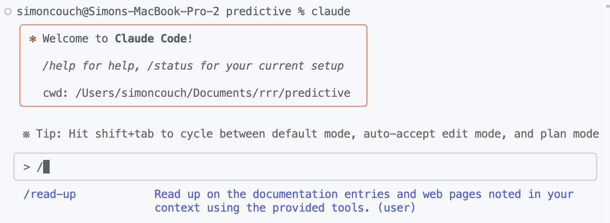
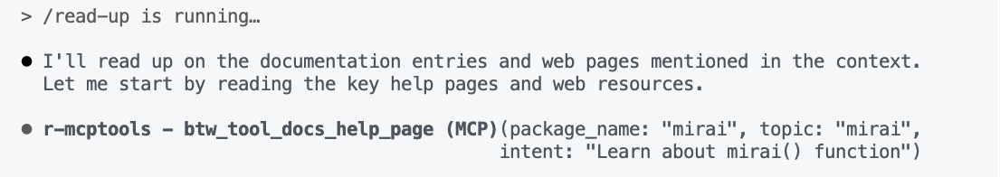
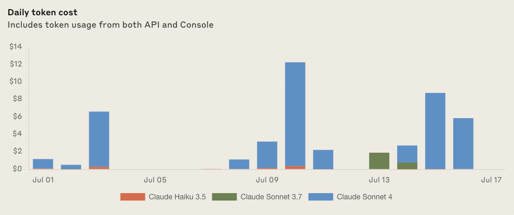

A couple months ago, I wrote a bit about how I was using Claude Code to help me write R code. At the time, I mostly just shared my impressions of working with the tool and some prompting tips. In the month or two after I wrote the post, my usage waned; I was mostly back to using LLMs only for shorter, more narrowly-scoped tasks. A few weeks ago, though, we put together some tooling that has helped me get much more out of the tool and thus made me interested in using it more often again.
The tl;dr:
- Give models the ability to read R package documentation using the Model Context Protocol
- Use slash commands in combination with references to external documentation in CLAUDE.md
-
/compactstinks
Context
When working with Claude Code and other coding assistants, I’d often find that I’d spend the first couple minutes interacting with the tool just compiling the right context to get it situated with the project. Only once the model had seen large portions of the codebase, a good bit of related documentation, and a few rounds of edit rejections from me did I start to accept edits from the tool. At some point, rather than bumbling through that process of context building every time I started a new chat, I decided I’d just pay attention to the things I was saying again and again and put the effort in to get them into context from the get-go.
In this section, I’ll outline what I’m keeping in my CLAUDE.md files and how I’m making sure Claude Code actually integrates their contents into the changes it proposes.
Project context
In most R projects I work on regularly, now, there’s a CLAUDE.md file in the project directory. This file contains context on the project itself rather than context generally about my preferences and workflows. Generally, these files contain 1) instructions to read project source, 2) instructions to read about the dependencies of the project, and 3) context on the project that I add to as I go.
1) Project source: Most of my project-level CLAUDE.md files contain some instruction like: “AI assistants should read every file in R/.” If you’re working on an R project other than a package, you might write “every .R file.” This may seem overboard, but in my experience, I often needed the model to read just about everything before I got anything useful out of it anyway.
2) Project dependencies: Often, R packages I’m working on rely on new and/or less-popular R packages, which LLMs might not be familiar with. How can I teach models about these R packages, or give them the ability to go peruse the package documentation themselves? This problem comes up again and again when using LLMs for code assistance, and we’ve put together some solutions here that we’re really excited about.
The btw package provides a number of tools that make it easier to provide context to LLMs. A subset of those tools are focused on LLM-friendly R package documentation: namespaces, help-pages, vignettes, etc. As of a few weeks ago, it’s now possible to surface those tools as an MCP server, meaning that if Claude Code comes across some function it hasn’t seen before, it can pull up the documentation page for the function in the same way I might and read up on it before responding.
To set up Claude Code with an MCP server for R package documentation, install btw with pak::pak("posit-dev/btw") and then paste the following into a terminal:
claude mcp add -s "user" r-btw -- Rscript -e "btw::btw_mcp_server(tools = 'docs')"From then on, every time you start Claude Code, the app will have a set of tools available that allow it to read up on any R packages you have installed. So, while you’re chatting, you could just write “read ?dplyr::filter and then…”; before Claude Code does whatever you asked it to do, it will pull up the help page at ?dplyr::filter. The real value here, though, is in having Claude Code read the documentation of some set of functions every time you start claude up. So, for example, I have in one CLAUDE.md file:
Future AI assistants working on this project should read these help pages via btw tools:
I drop some URLs in these sometimes, too.
3) Common mistakes: The last element of project context that I try to keep around is any hard-won optimizations or understandings. For example, in an LLM-based app I’ve been working on recently, I have this instruction:
The app uses
shiny::ExtendedTaskfor the chat streaming process to keep the UI responsive while the LLM generates responses. The ExtendedTask wraps the entire streaming pipeline from tool execution through text generation. The streaming of text from the model is itself the ExtendedTask; while the LLM responds to the user, the app is able to respond to other reactives while tokens stream in.
While working on this app, I found again and again that the model misinterpreted why the ExtendedTask functionality was being used and the consequences of removing it. Once I had communicated this clearly in one session, I said something like “Document your learnings about how ExtendedTasks are used in this app.”
In my first experiences using Claude Code, I mostly thought of these CLAUDE.md documents as relatively static; once the model knows my preferences and the build and test commands, it’s smooth sailing. As I’ve spent more time with the tool, I’ve found that it’s much more useful to treat them as living documents, where I continue to document how functionality works as I implement it.
User context
Regardless of which project I’m working on, there are some style elements of code that Claude Code writes that I always want to change. The context on these project-agnostic preferences live in a CLAUDE.md file in the directory where I keep all of my R projects. I’ll refrain from leaving the full prompt here (your preferences are different than mine!), but here’s one example of the kind of guidance I have in there:
In general, place user-facing functions at the top of files, and then helpers below them. For helpers used inside of helpers, place them even further down. Generally, do not define functions inside of functions unless they are very brief, anonymous functions. For example:
# good main_function <- function(data) { processed <- helper_function(data) res <- arrange(processed, scaled) res } helper_function <- function(x) { res <- filter(x, !is.na(value)) res <- mutate(res, scaled = scale(value)) res } # bad main_function <- function(data) { helper_function <- function(x) { res <- filter(x, !is.na(value)) res <- mutate(res, scaled = scale(value)) res } processed <- helper_function(data) res <- arrange(processed, scaled) res } # bad helper_function <- function(x) { res <- filter(x, !is.na(value)) res <- mutate(res, scaled = scale(value)) res } main_function <- function(data) { processed <- helper_function(data) res <- arrange(processed, scaled) res }
In addition to code style preferences, there’s also a bunch of guidance on testing based on the system prompt of a tool I experimented with earlier in the year and some incantations to try and reduce sycophancy.
As I mentioned in my last post, Claude Code loves to add code comments saying what it’s doing rather than why. I don’t see much value in these comments, but it’s also still remarkably difficult to get it to not add them. One trick I saw somewhere on the internet that works (sometimes😶) is to have the model repeat back to you what it read, affirming that it won’t add those comments:
Do not add new code comments when editing files. Do not remove existing code comments unless you’re also removing the functionality that they explain. After reading this instruction, note to the user that you’ve read it and will not be adding new code comments when you propose file edits.
I also include a few examples of code with comments vs. without, because apparently this is a really hard problem.
Workflow
While the contents of all of your CLAUDE.md files will be placed in Claude Code’s context window, the model will not have a chance to take any actions based on the context. Specifically, if I place those references to URLs and help-files in the context, the model won’t have actually read those web pages and documentation entries when I start up Claude Code. Instead, we need to explicitly say “go read up on the references in your context.”
Claude Code supports “slash commands” that allow you to create short-hands for these sorts of common prompts. They’re just markdown files in a special directory; here’s the one that I use:
mkdir -p ~/.claude/commands
echo "Read up on the documentation entries and web pages noted in your context using the provided tools." > ~/.claude/commands/read-up.mdThen, when I run claude (or /compact) in the future and type /, the first auto-completed suggestion is read-up:
Running it will inject that prompt, and the model will begin tool calling for the web pages and documentation entries noted in its system context:

Depending on the project, this might take 10 to 30 seconds, but 1) I don’t have to pay attention at all while it does so and 2) that’s much less time than if I were to build up context with the model interactively. Usually, those tool calls have completed by the time I’m able to type out my first prompt. (If I finish typing the prompt before the tool calls are finished, I usually take it as an opportunity to explain what I want to do more thoroughly than I otherwise would.)
Note
It’s true that we could also write something like a CLAUDE.Rmd, which would just render the full .R file contents and tool call results statically. I gave this a go but found that 1) it was annoying to make sure I was rendering it often enough and 2) Claude would still tool call for those docs a second time sometimes? Actually calling the tool itself seems to more clearly “register” with the model that it’s seen a piece of documentation.
Other miscellaneous workflow patterns:
- Apparently some folks manage to have several different Claude Code instances running at the same time, or whatever. Not my thing—I never use more than one instance at once, and usually I’m reading and occasionally editing other files as I use it.
- I almost never auto-accept edits except for the most fun-little-throwaway-programs.
- I do auto-accept tool calls for package documentation. If you want to do the same, type
/allowed-toolsand configure from there. - There’s a Claude Code OpenVSX extension that renders diffs in your editor pane rather than in the terminal. After a couple days of trying it, I found it too annoying that the focus would move to the suggested edits while I was in the middle of typing in some other file—resulting in spare characters left in one or both files—and I uninstalled it.
💰💰💰
In my previous post, I wrote that I had spent about $25 on my Claude Code API key in the previous month, and that I thought $100 per hour (as the website suggested at the time was possible with “intensive use”) was bonkers.
So, my personal costs? All that additional context must be expensive right? So far in July (it’s the 17th), I’ve spent $45 on my Claude Code API key. So, yes, more expensive than it was previously. In the last two months, the most I’ve spent on that key in a day was $11, and I don’t use the key at all once or twice a work week. A typical day is something like $4.

Interestingly, Anthropic’s documentation on expected costs has changed, a bit too:
Claude Code consumes tokens for each interaction. The average cost is $6 per developer per day, with daily costs remaining below $12 for 90% of users.
For team usage, Claude Code charges by API token consumption. On average, Claude Code costs ~$50-60/developer per month with Sonnet 4 though there is large variance depending on how many instances users are running and whether they’re using it in automation.
So, sounds like I’m the most regular-degular Claude Coder there ever was. This also smells more data-centric than the old wording? I wonder if this is an explicit counter to the “Claude Code is so expensive” narrative.
Note
Your feelings on what is A Lot Of Money to spend on LLMs likely differ from mine. I write software for a living, and I do so in the USA, both of which greatly effect what I think of as “cheap.”
Context management
A rant from Slack a few days ago:
It sort of surprises me that
/compactin Claude Code is as bad as it is? I often find that/compactis almost catastrophic in terms of how helpful the tool is before vs. after the action; I have to do all the same steps in building the context that made the tool helpful back up every time it happens, and I lose recent “checkpoints” in the conversation that I’d otherwise want to refer to.I would much prefer that, instead of summarizing all 200,000 tokens into 500 or so, Haiku would a) choose 5-10 tool call results that weren’t that helpful to remove (or summarize in a sentence), or b) choose a pair of turn indices inside which to pare back into a few sentences. This would pare the conversation back to, say, 100,000 tokens, always preserving the most recent 10 or so turns.
I feel like there must be something I’m missing. Poking around in the docs now, I see there’s a PreCompact hook—I’m definitely interested in spending some time with that. We’re spending some time on better default behavior in our own packages, as well.
Altogether, though, I’ve been really enjoying using Claude Code recently. Being intentional about my workflows and reducing friction helped me get much more out of it, as is the case with so many coding tools.
Conversations with Hannah Frick, Malcolm Barrett, and Joshua Yamamoto helped me solidify some of the ideas in this post. Garrick Aden-Buie is to thank for the btw package, and Winston Chang and Charlie Gao were instrumental in tightening up our support for MCP in R.